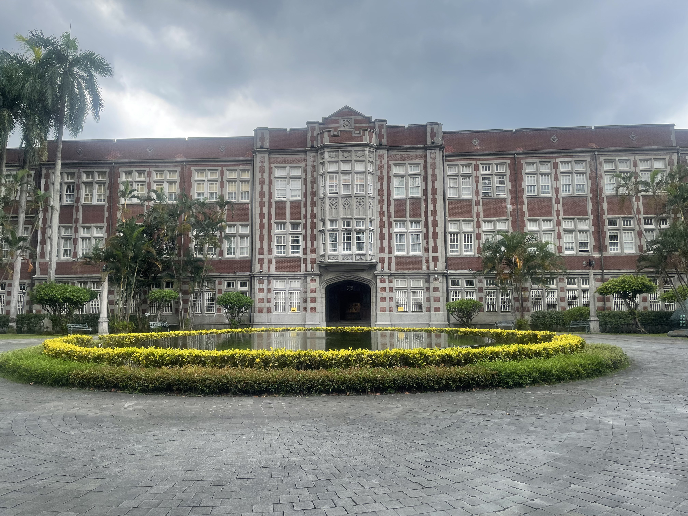
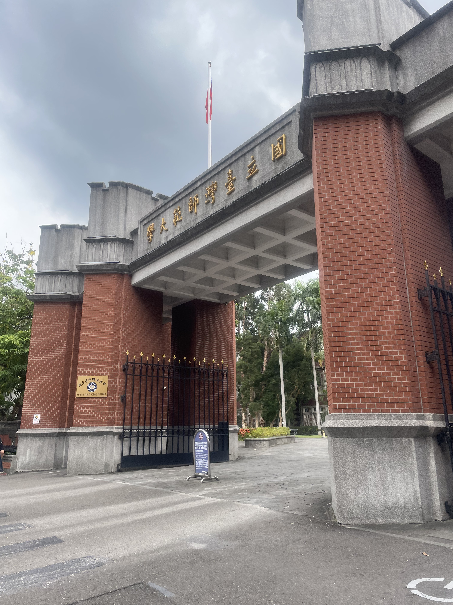
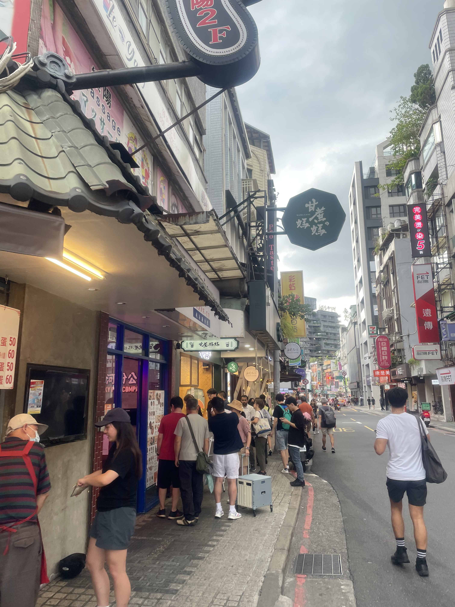
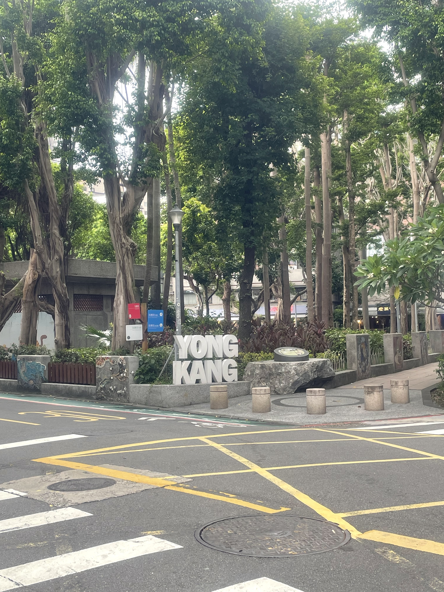

台北市大安區
基本資訊
位於台北市核心地帶，是一個高度成熟、同時兼具學術氣息與城市活力的行政區。這裡以國立臺灣大學為中心，形塑出濃厚的人文與教育氛圍，周邊聚集書店、咖啡館與各式文化空間，使整個區域帶有安靜卻不封閉的城市性格。 區內綠地資源相當豐富，其中最具代表性的便是大安森林公園，廣闊的綠意在高密度的都市中形成難得的開放空間，不僅是居民日常休憩的重要場域，也讓大安區在繁忙節奏中保有呼吸感。沿著街區行走，可以明顯感受到生活機能與自然環境之間的平衡。 在商業與消費文化方面，大安區橫跨傳統與現代。忠孝東路一帶發展出成熟的東區商圈，流行、餐飲與設計產業密集，而永康街周邊則以美食與生活風格小店聞名，吸引大量觀光客與在地居民交織使用。這種多層次的街區樣貌，使大安區不只是消費場所，更是一種生活方式的展現。
推薦景點
| 永康街
是一條融合在地生活氣息與觀光特色的街區。街道尺度不大，卻因餐飲文化與人文氛圍而格外熱鬧，長年被視為台北代表性的美食與散步街道之一。 這裡最早因周邊住宅與學區發展而形成生活型商圈，隨著知名餐廳與特色小店進駐，逐漸吸引外地與國際旅客。街區中可見台式小吃、傳統甜品，也有結合創意與設計感的咖啡館與選物店，呈現出新舊並存的城市風景。 永康街的魅力不只在於飲食，也體現在街道氛圍本身。低樓層建築與綠蔭巷弄，讓人能以緩慢的步調行走與停留，與鄰近的中正紀念堂形成動靜對比。對許多人而言，永康街不只是觀光景點，更是一個能感受台北日常生活節奏的地方。



